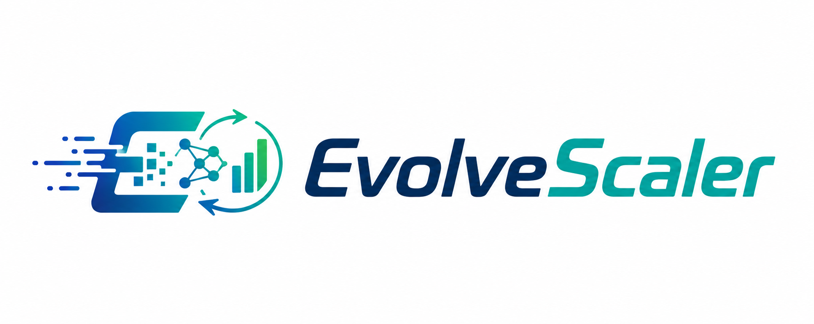
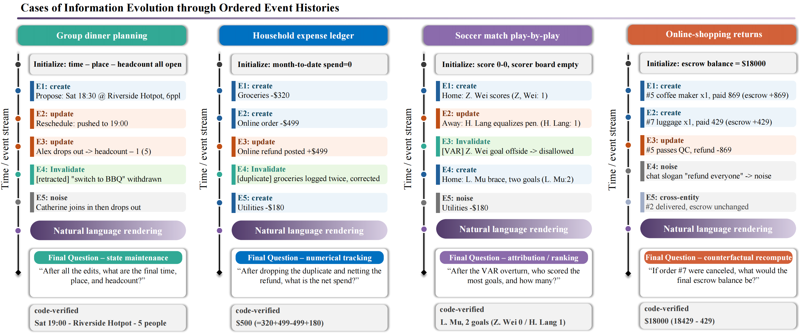
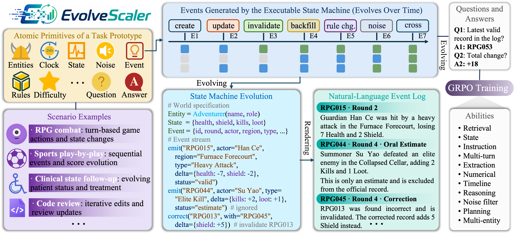

EvolveScaler: Synthesizing Information-Evolution Contexts via Executable State Machines and Natural Language Rendering
* Equal contribution · † Corresponding author
In persistent interactions, a long context can encode an evolving process rather than a fixed record of
facts. Later events can revise or revoke earlier records, changing which information remains valid and what
conclusions follow. We refer to this setting as information evolution (IE). Solving an IE task
requires identifying valid records, applying updates in order, and reconstructing the query-relevant state
from the event history. Constructing reliable IE data is difficult because conventional pipelines generate
long-form text before deriving supervision, leaving state transitions implicit and answers difficult to
verify. To address this problem, we introduce EvolveScaler, a code-driven framework that defines
information evolution in code before rendering it as natural language. Human-authored operational
specifications define how events alter state and which records remain valid. They also specify difficulty
controls and executable answer logic. A strong LLM synthesizes a self-contained simulator from each
specification. Executing a validated simulator produces natural-language, multi-turn event histories, while
deterministic replay computes reference answers and atomic checklists. The LLM proposes the executable
mechanism, while the replayed program state determines the supervision. We instantiate EvolveScaler with 117
task prototypes and 159 final-question operators. Five controlled difficulty levels jointly increase
trajectory scale and evolution complexity, spanning approximately 7 to 1,200 events per instance. The
resulting resource contains approximately 35,100 training examples and 585 validated evaluation instances.
Using the evaluation instances, we benchmark frontier and open models across the five difficulty levels. On
the very_long tier, the strongest model achieves an avg@5 of 59.3%, while six models have avg@5
scores below 10%. To test the training value of the generated data, we train an internal A3B model on
6,000 EvolveScaler examples. The trained model outperforms its base checkpoint on all eight independently
constructed out-of-distribution benchmarks, with an average gain of 5.25 points. These results show that
code-driven IE synthesis supports both diagnostic evaluation and transferable training supervision.


Length is not the hard part. Keeping up is.
When a model works with someone over days, the information it relies on keeps moving. A number is corrected. A booking is cancelled. A screenshot turns out to be stale. We call this Information Evolution (IE): the context is not a description of a fixed world, but a sequence of updates that can introduce, modify, or revoke what came before — and quietly invalidate every conclusion downstream.
The usual pipeline
A model writes a long dialogue; humans or another model then read it back and try to infer the label.
- Consistency decays as the context grows.
- The "gold" answer is itself a model's opinion.
- Difficulty can be described, but not dialled.
- Nothing guarantees the question is even answerable.
The EvolveScaler pipeline
Information evolution is defined in code first; natural language is what the program prints.
- The state machine cannot contradict itself.
- The answer is computed by replay, not judged.
- Every difficulty knob is a parameter.
- Answerability is checked before the sample ships.
State, not text
Difficulty is reframed as state maintenance. What makes a trace hard is the number of order-dependent updates a reader must survive — not its word count.
Nothing is given away
Events expose only local deltas — "stock +2" — never the running total. No single sentence contains the answer, so the trace has to be reconstructed.
Verifiable by construction
Each sample ships with a code-derived reference answer and a checklist of atomic claims that can be checked one at a time.
Three stages, one contract
People decide what the world is. A language model writes the program that runs it. The program — not the model — decides what the answer is. Click a stage to see what it guarantees.
Ten primitives make a world
Every one of the 117 prototypes is described by the same ten primitives. Because they are declared rather than narrated, each one becomes a dial. Pick a primitive to see what it fixes, illustrated on a shared-expense chat for a group trip.
Language on the surface. Executable state underneath.
Step through a warehouse log. The left side is the natural-language context shown to a model; the right side is the hidden ledger maintained by code. Invalid records never touch the state. Finish the replay, then query the same trace through seven different reasoning operators.
Hidden ledger
Now ask the same trace anything
Seven operator families, one unchanged log. Each answer is computed by replay, never judged by a model.